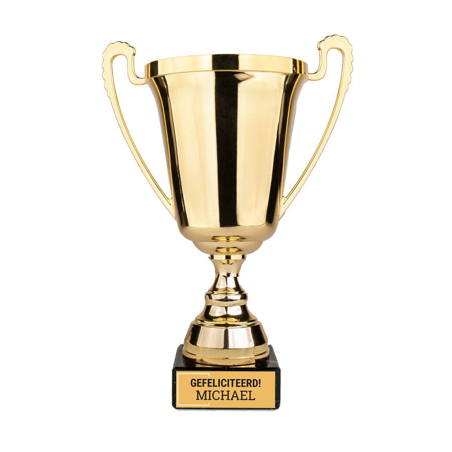

2017-2018
ons eerste jaar in de LZV cup. We startte uiteraard in 4e provinciale. Onze ploeg staat net op poten maar zeker nog niet op punt. We verliezen onze eerste 2 matchen nipt, en verloren onze moed een beetje. De derde match begon het samenspel beter te gaan en begon onze ploeg een geoliede machine te worden. We scoorde de ene goal na de andere en uitslagen als 15-2 of 20-4 waren helemaal geen uitzonderingen meer. De top 10 topscoorders van heel LZV waren er dan ook 8 uit onze ploeg. Met een doelpuntensaldo van meer dan 150, heeft LZV ons verplicht te promoveren naar 2de provinciale.
2018-2019
Het seizoen begon moeilijk. De overstap van 4de naar 2de provinciale is niet makkelijk en het niveauverschil is groot. We verliezen weer onze eerste paar matchen. We hadden niet zo goede vooruitzichten maar vanaf match 4/5 begon alles weer te gaan zoals het moest. We konden weer scoren. Zelfs al was het niet zo overtuigd als het jaar ervoor, toch wonnen we bijna al onze matchen. Door de slechte matchen in het begin en enkele keren forfait door ziekte of familiale redenen hebben we niet kunnen meespelen voor de promotie maar de honger hiernaar is groot voor het jaar erna.
2019-2020
dit jaar kunnen we wel sterk beginnen en vinden we direct onze draai met de ploeg. We voelen ook wel direct aan dat de concurrentie een maatje sterker is dan het afgelopen jaar. We winnen het grootste deel van de matchen en staan in de top 3, iedereen is dus ook zeer enthousiast en iedereen wilt gaan voor de promotie. Jammer genoeg hebben we dit seizoen niet kunnen uitspelen om willen van de Corona. Deze pandemie heeft jammer genoeg ook onze competitie abrupt stopgezet. We stonden in de top 3 wanneer dit gebeurde en zijn er dus ook van overtuigt dat het ons volgend seizoen zal lukken om te stijgen naar 1ste provinciale.